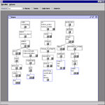
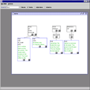
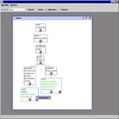

WordNet Java Viewer is a graphic interactive tool for viewing WordNet - a semantic network of English senses. WordNet is a well recognized linguistic tool, that has been on on-going development since 1985, at Princeton university. WordNet is composed of four different semantic networks: nouns, verbs, adjectives and adverbs. Each node in the semantic networks is referred to as a 'synset' , that is a synonym set. Synsets usually have a gloss (definition) of their meaning, and various links to other sysnets. Such links include 'is-a' link (Hypernym/Hyponym in the WordNet jargon), part-of, see-also and others. For a complete description of WordNet or for downloading it, check the WordNet web site.
WordNet has more than ten different existing browsers (also available at their web site), most of them textual. WordNet Java Viewer enables access to the different knowledge bits contained in WordNet, as well as a spatial view on the network structure. The network is constructed as a graph, using only the is-a links. WordNet Java Viewer uses the WordNet c api through JNI code and relies heavily on Jazz classes for the display. In constructing the complex graphs, it is only needed to construct the logical representation - all the layout is managed by Jazz layout mechanism. Jazz inherent zooming and panning also help manage the tens of thousands nodes size networks.
WordNet Java Viewer was designed and implemented by Ruth Sperer, a graduate student at the university of Maryland, under the guidance of Prof. Ben Bederson. For more information about this project, please contact sperer@cs.umd.edu.
 WordNet Java Viewer noun hierarchy: the 5 senses of the noun fork and their location
 WordNet Java Viewer verb hierarchy: the 5 senses of the verb float, their location and definition
 WordNet Java Viewer noun hierarchy: two senses of the noun meal, their definition and possible links
{kind=link}
{kind=link}
{kind=link}